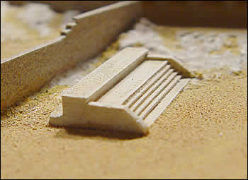
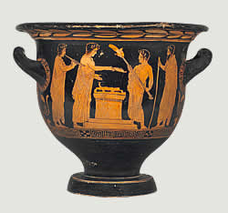

Date: unknown - an altar had been present since at least the sixth century BC Architect:Unknown

The most important cult of Athena on the Acropolis was that of Athena Polias, Athena of the city. The site of the altar for Athena Polias can only be guessed at today from cuttings in the rock.

A scene showing a sacrifice being made at an altar
During the Panathenaia festival, a large herd of cattle would have been sacrificed on the altar. Only the parts which couldn't be eaten were burnt for the gods. The meat was later given to the people of Athens for a big shared meal.